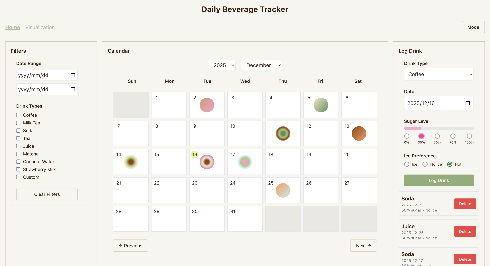
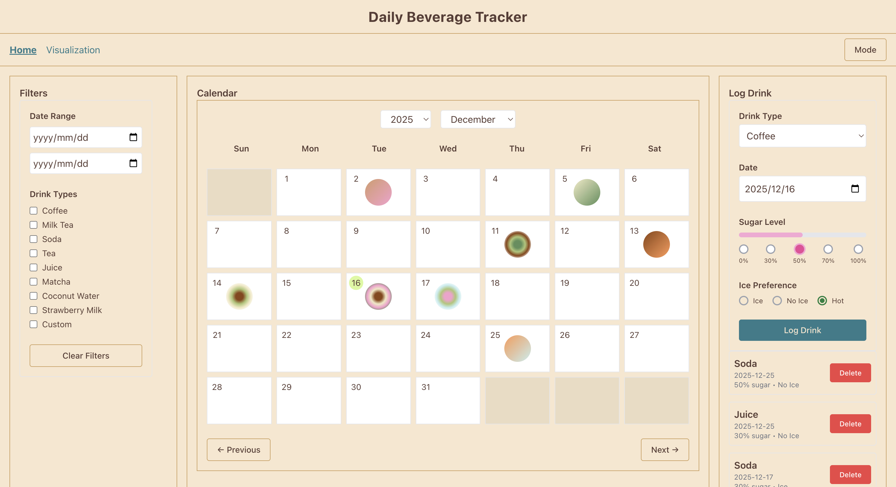
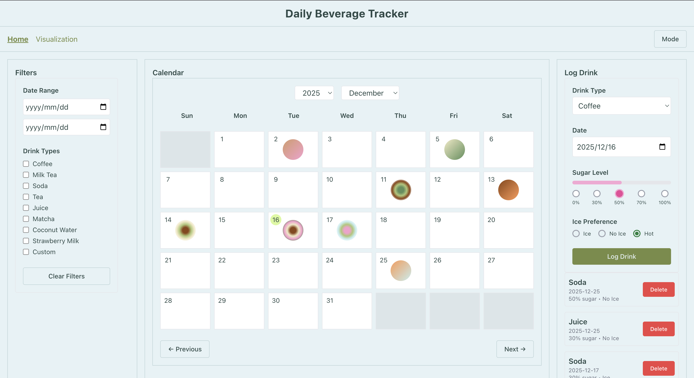
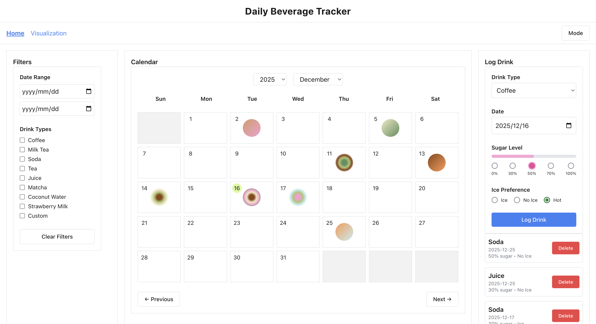
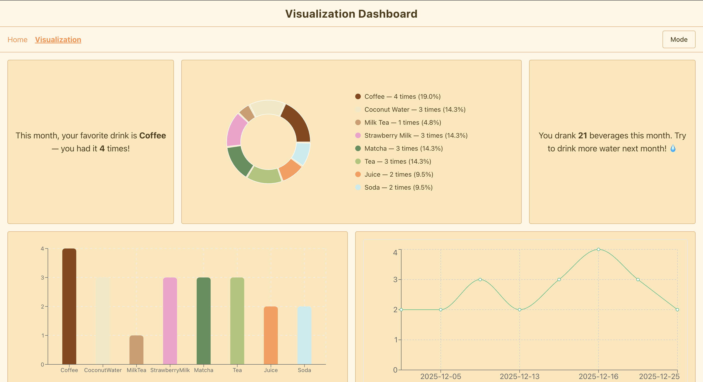
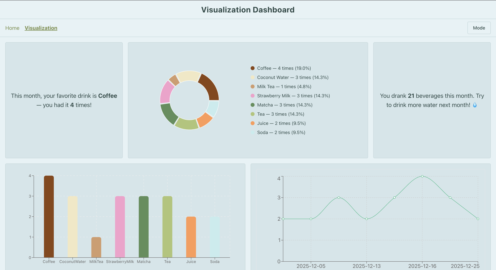

2026.1
Daily Beverage Tracker is a React web app for tracking daily beverage intake through a calendar-style log
and simple data
visualizations.
The design theme centers on health awareness and data visualization, drawing inspiration from mood-tracking
apps to create an engaging interface.
It helps users understand:
- The frequency of consumption for different beverages
- Weekly or monthly favorite drinks
- And trends in daily beverage diversity over time



This project was inspired by my own daily habit of drinking different beverages (coffee, tea, milk drinks,
etc.) and the difficulty of remembering what I actually consumed over time.
I wanted to design a tool that feels closer to a personal journal than a strict health tracker, using a
calendar view and subtle visual cues instead of numbers-heavy input.


React – used to build a component-based interface with hooks such as
useState, useEffect, and useRef
Redux Toolkit + React Redux – managing global application state including
beverage logs, filters, and color themes
Redux Persist – ensuring logged data and selected themes persist after page
refresh
React Router – handling navigation between the calendar view and
visualization view
Recharts – creating bar and line charts to visualize beverage consumption
patterns
Tailwind CSS – styling the interface and supporting multiple visual themes